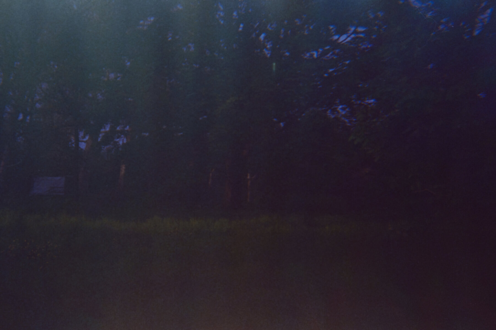

A day in Hyde Park
story o6
It seems that
there are many large trees
in the park.
They may look similar
at first glance,
but
upon
closer inspection,
there are unique trees mixed in.
next ∇
there are many large trees
in the park.
They may look similar
at first glance,
but
upon
closer inspection,
there are unique trees mixed in.
next ∇
One of them has
seven large, round leaves
that point downwards.
And between the leaves, there are white flowers that take the shape of a tower and face the sky. The numerous leaves hide the tree trunk from view, and it almost seems to resemble a mud monster. The dark spaces beneath the tree leaves give an eerie feeling.

Another tree, for some reason,
has no leaves or branches,
only a trunk.
next ∇
The part
where the branches
used to be is
round in shape
and has a distinct appearance,
as if someone had placed
a round clod of mud on the trunk.
These trees remind me
of the forest
in a series ‘Stranger Things’,
making the once peaceful park feel like a bleak scene from a movie.
next ∇
While walking,
I stumbled upon a tree
that looked as though it had been struck by lightning and had fallen over.
Looking at the base of the fallen tree
next to the trunk,
I noticed a flat surface,
as if someone had cut it.
The split tree creates a mysterious feeling,
and when a crow flew in and perched on top of it,
the atmosphere became
even more eerie.